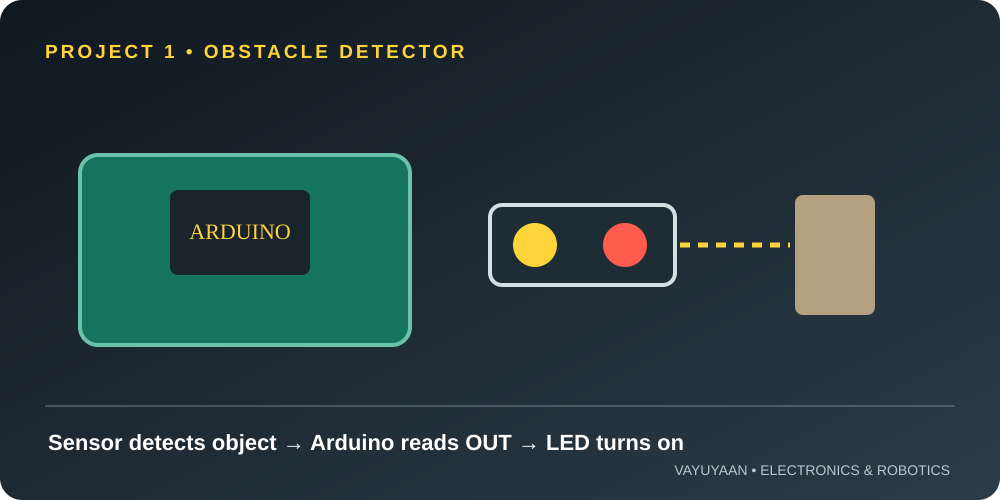
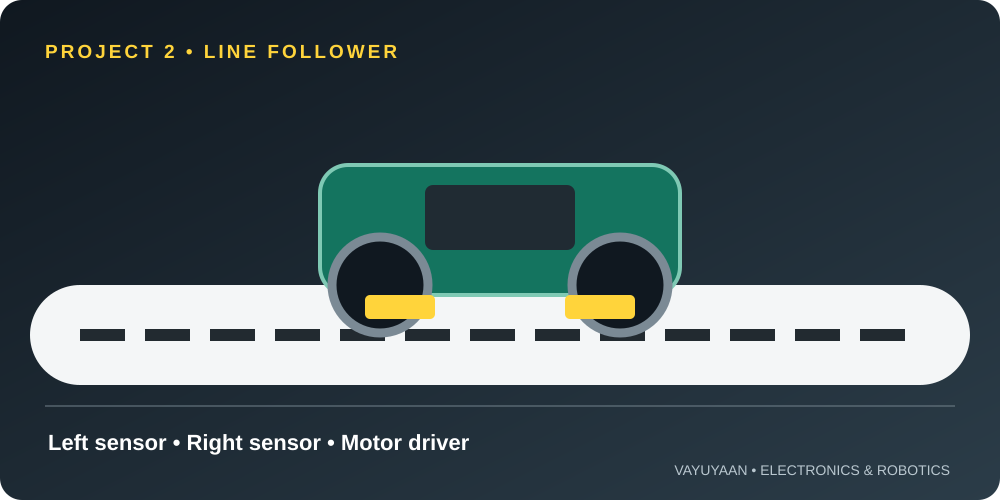
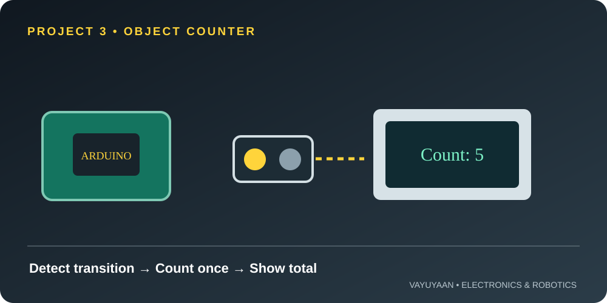
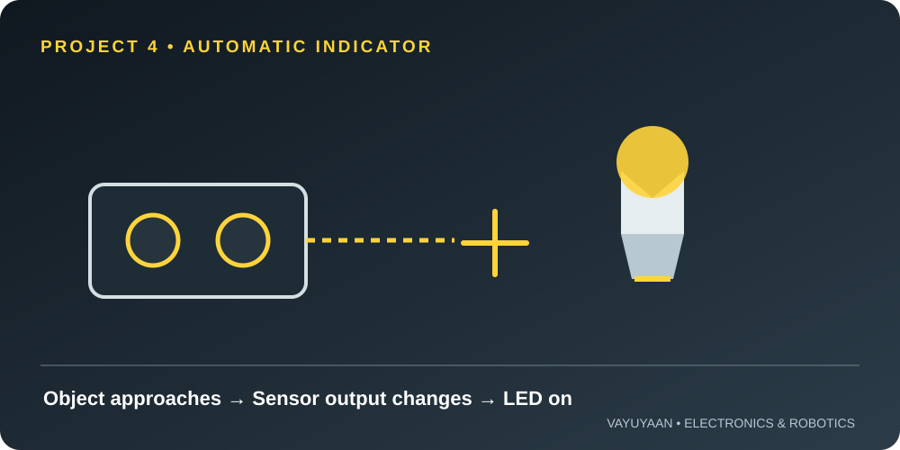
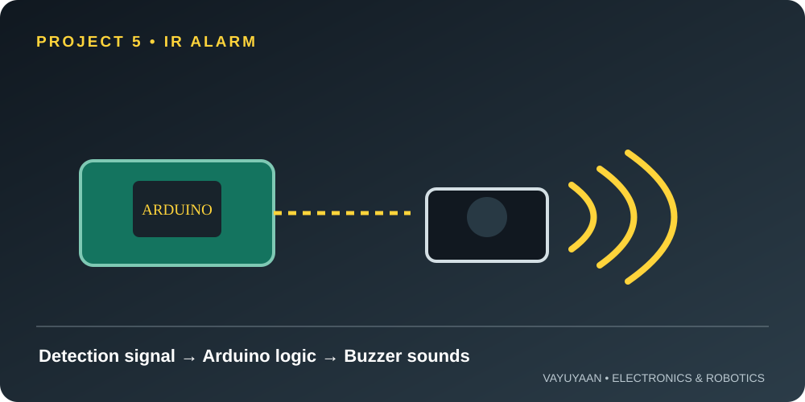

Infrared (IR) sensor modules are useful when a project needs to detect a nearby object or follow a line. Most low-cost reflective modules shine infrared light and measure how much returns from a surface. Their output changes according to the module design, adjustment and target.
If you are new to the component, first review the IR Sensor working principle. This article focuses on projects you can build after you understand the sensor's output.
How an IR sensor module works
A common reflective IR module contains an infrared emitter and a receiver. The emitter sends IR light toward a surface; the receiver detects some of the reflected light. An onboard comparator on many modules converts the receiver signal into a digital HIGH or LOW output.
Do not assume every module uses the same logic. Some boards output LOW when they detect an object, while others may behave differently. Test the module and check its documentation before writing project logic.
IMPORTANT
Reflective IR sensors are not universal distance meters. Detection depends on surface colour, angle, ambient light, sensor height and the module's sensitivity setting. Black tape may absorb more IR than a light surface, but results vary.
Components and safe setup
- Arduino Uno R3 or a compatible 5 V microcontroller board.
- One or more digital-output IR sensor modules, depending on the project.
- Breadboard, jumper wires and a USB data cable.
- LED and a suitable current-limiting resistor for indicator projects.
- For the robot: chassis, two DC geared motors, wheels and a compatible motor driver.
Connect the module's VCC and GND to the supply specified for your exact board. Connect its OUT pin to a digital input such as D2. Many modules accept 3.3–5 V, but verify before connecting. If you use a 3.3 V controller, make sure the sensor's output voltage is safe for that input.
Keep motors on a suitable motor-driver circuit; do not power them directly from Arduino I/O pins. For a standalone test, upload a small sketch that reads the sensor pin and prints the result in the Serial Monitor. Move a target in front of the sensor and note whether detection produces HIGH or LOW.
Project 1: IR obstacle detector
This is the simplest project. The Arduino reads one IR sensor and turns on an LED when the module detects an object. It helps you verify the module, output polarity and basic program flow before adding more parts.

Connections
- Sensor VCC → rated supply; GND → GND; OUT → D2.
- LED anode → D8 through a current-limiting resistor; LED cathode → GND. You can instead use the onboard LED on many Uno boards.
Example code
const int sensorPin = 2;
const int ledPin = 8;
// Change this to LOW if your module detects with LOW.
const int detectedState = HIGH;
void setup() {
pinMode(sensorPin, INPUT);
pinMode(ledPin, OUTPUT);
}
void loop() {
int sensorState = digitalRead(sensorPin);
digitalWrite(ledPin, sensorState == detectedState ? HIGH : LOW);
delay(20);
}Test it: Adjust the module's potentiometer slowly if it has one. Try light and dark objects at different distances, then set the detection threshold for your use case. If the LED behaves backwards, confirm the output polarity and change detectedState.
Project 2: Arduino line-following robot
A line follower uses two or more downward-facing IR sensors to detect contrast between a track and its background. The Arduino reads the sensor pattern and commands the motors through a motor driver. Two sensors can handle a simple track; more sensors can improve behaviour on curves and junctions.

For the complete robot build, use this Arduino line follower robot tutorial. The checklist below explains how to approach the IR sensing part before integrating the motors.
- Mount sensors close to the floor and at a consistent height. Follow the sensor maker's guidance and leave room to adjust it.
- Read each sensor separately over the track and background. Record whether black or white causes HIGH or LOW for your module.
- Map the readings to actions such as forward, slight left, slight right and stop. The mapping depends on sensor placement and track contrast.
- Test the motors with the wheels lifted before placing the robot on the floor. Confirm left and right motor direction.
- Start slowly and tune the sensor spacing, motor speed and turning response.
BUILD TIP
Do not copy a line-follower truth table blindly. IR boards can use different output polarities, so measure your own sensors and write the control rules from those readings.
Project 3: Simple object counter
Use a digital IR module as a basic passage detector. When an object passes in front of the sensor, the Arduino counts a transition and prints the total. This can demonstrate counting small objects on a test track, but a single reflective sensor may miss objects if they pass too quickly or have difficult surfaces.

Counting logic
Read the sensor continuously and count only when its state changes from “not detected” to “detected.” Add a short debounce or lockout interval to reduce repeated counts while an object remains in front of the sensor. If two objects pass close together, test whether the module can distinguish them at that speed.
const int sensorPin = 2;
const int detectedState = HIGH; // Verify for your module
int previousState = LOW;
unsigned long lastCountMs = 0;
unsigned long count = 0;
void setup() {
pinMode(sensorPin, INPUT);
Serial.begin(9600);
}
void loop() {
int currentState = digitalRead(sensorPin);
unsigned long now = millis();
if (currentState == detectedState &&
previousState != detectedState &&
now - lastCountMs > 200) {
count++;
lastCountMs = now;
Serial.println(count);
}
previousState = currentState;
}Test it: Pass one object at a time and compare the Serial Monitor with the real count. Increase the lockout interval if one object creates multiple counts; reduce it cautiously if objects are missed. For dependable industrial counting, choose a sensor designed for the target speed, material and environment.
Project 4: Automatic light or indicator
Use an IR module to trigger a small indicator when a hand or object approaches a defined point. For example, it can switch on an LED near a drawer, a demonstration display or a model doorway. The sensor does not measure ambient brightness, so this is object-triggered lighting rather than a true dark-activated night light.

Build approach
- Connect the IR output to a digital input and the LED through a resistor to a digital output.
- Start with the obstacle-detector sketch and confirm the detection polarity.
- Choose whether the LED should remain on only during detection or stay on for a timed interval after detection.
- Test the response from several approach angles and in the room's actual lighting.
For a light that activates only when a room becomes dark, use a light-dependent resistor (LDR) or a suitable ambient-light sensor instead. Choose the sensing component based on what the project must measure.
Project 5: Basic IR-triggered alarm
A reflective IR sensor can trigger a buzzer or indicator when an object enters a small test area. This is suitable for a learning demo or a model display. It is not a reliable security system: sunlight, surface changes, alignment and sensor range can cause missed detections or false triggers.

Build approach
- Read the IR module with a digital input.
- Drive a small active buzzer only if its current requirements are within the board's safe limits; otherwise use a suitable transistor driver or buzzer module.
- Add a short re-trigger delay if the alarm should sound once per detection rather than continuously.
- Test with different targets and lighting conditions, and document the limits of your setup.
Never connect a load that draws more current than a microcontroller pin can safely supply. Check the specifications of your buzzer or driver module before wiring it.
Troubleshooting checklist
| Problem | What to check |
|---|---|
| No output change | Verify VCC, GND and OUT wiring; confirm the module supply rating; test with the Serial Monitor. |
| Output is inverted | Check whether the module is active HIGH or active LOW and update the code's detection state. |
| False detections | Adjust sensitivity, reduce ambient light interference, secure the sensor and retest the target angle. |
| Line follower wanders | Check sensor height and spacing, track contrast, motor direction, speed and output polarity. |
| Object counts repeat | Count only a new detection edge and tune the lockout interval for the object's speed. |
Frequently asked questions
Can one IR sensor control a line-following robot?
One sensor can detect a line edge in a very simple experiment, but a practical line follower normally uses two or more sensors to determine whether the robot is left or right of the track.
Does an IR sensor measure exact distance?
Most inexpensive reflective digital modules are intended for detection, not accurate distance measurement. Their response depends on the target and setup. Use a distance sensor designed for your required range and accuracy if you need measurements.
Why does my IR sensor always show HIGH or LOW?
Check the supply, common ground, output pin and sensitivity adjustment. Confirm the logic level with a known target and check the module's documentation. Some boards also need a pull-up or pull-down depending on their circuit design.
Can I connect an IR module to ESP32?
Often yes, if the module's signal voltage is compatible with ESP32's 3.3 V GPIO. Do not feed a 5 V output into an ESP32 input unless the specific board documentation confirms it is safe. Check the module output before connecting.
NEXT BUILD
Ready to build a robot?
Use the IR sensors to read the track first, then add motor control and tune the robot one step at a time.
Open the line follower tutorial →Practical note: sensor modules vary by manufacturer. Confirm pin labels, supply voltage and output polarity using the documentation for the exact module you own. Test each subsystem independently before combining it into a larger project.